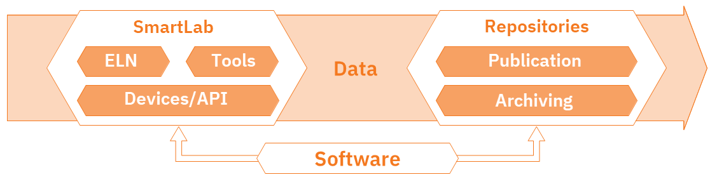

2.1 Introduction to Electronic Lab Notebooks
The content in this section is adapted from RDM@KIT.
For planning, conducting and analyzing research experiments, electronic laboratory notebooks are becoming more and more common, thus contributing to the digitization of research.
Laboratory notebooks play an important role in the planning, conducting and analysis of (natural) scientific experiments. Lab books are traditionally analogue and paper-based, an approach that is no longer up-to-date, as research data is primarily available in digital form. The solution are electronic laboratory notebooks (ELNs). These offer significant advantages. They can be linked directly to laboratory devices, analysis software or storage systems, making results more reproducible and research more efficient.
There is now a whole range of ELNs adapted to the various needs of different scientific disciplines. Two of them are Chemotion ELN and Kadi4Mat, both are developed at KIT. More information on these two ELNs can be found at the section "Services & Tools".
For assistance on selecting and implementing an ELN, please refer to the ELN Guide and the ELN Finder.
Syllabus Elements
Learning Objectives
At the end of the section the learners can ...
- Describe what an electronic lab notebook is
- Give examples of electronic lab notebooks
- Explain advantages of an electronic lab notebook compared to a paper-based lab notebook
Target Audience
- attendees of this course
Duration
- 15 minutes
Prerequisites
Learning Tools
- none
Introduction to Electronic Lab Notebooks
What is a laboratory notebook?
- Laboratory notebooks are used to document, conduct and analyze scientific experiments and research data generated during the process
- They are primarily used in natural sciences
- Using them is part of „Good research practise“: “Continuous quality assurance during the research process includes (…) the keeping of laboratory notebooks.“12 (DE: 34)
How does it look like:
- Notebook, no loose sheets of paper
- Table of content
- Numbering of pages
- Records by days
- Experimental planning and conducting
- Recording results and measured data
Important:
- Permanent ink
- Should be written during or directly following an experiment
- Stays in the lab or institute
Summary: What is a laboratory notebook?
A laboratory notebook is a legal document to prove your scientific work and serves as a defense against accusations of misconduct.
Disadvantages of lab notebooks
- Experiments and results must be recorded manually
- Tables, graphs and analysis are available in digital form, but must be in the lab notebook, so they are often printed out and pasted in
- Is it readable and understandable for everyone?
- You can't access your lab notebook yourself, because it is in the institute
Famous negative example: Marie Curie‘s laboratory notebook

Marie Curie (1867-1934) Public Domain from Wikipedia.
.jpg){kind=link}
- After more than 100 years, many of Marie Curie's personal items, including her laboratory notes, are still radioactive56
- Curie's laboratory notes, are stored in lead-lined boxes at the French Bibliotheque National in Paris.
- Radioactive half life of Radium t½(226Ra) ≈ 1602 a

Lab Notebook of Marie Curie Public Domain from Wellcome Collection.
The solution: Electronic Laboratory Notebooks (ELNs)
The content in this section is adapted from ELN Finder
An electronic lab notebook (ELN) is a specialized software for:
- the structured description of an experiment, i.e. keeping records of
- the procedure
- the used materials and instruments
- the observations made during the experiment (incl. photos)
- the metadata/description of the data generated in the experiment and, if applicable, the files (or links to them) and inferences related to it
- the long term preservation and access of all this information in compliance with long-term archival criteria
Summary: What is an electronic laboratory notebook?
This means: An ELN is more than just a digital copy of a paper-based lab notebook. In fact, they can be fully implemented into the digital research data management system.

Smart Lab licences under CC BY-SA 4.0, from NFDI4Chem.
Advantages of ELNs
The following content is adapted from ZB MED and the ZB MED ELN-Guide.
Linked digital research environment
- Automatisation: Measuring devices deliver their data directly to the ELN
- External and internal linking to files and data sets
- Integration or linking of data that is already available in a digital format (e.g. measurements, images, tables)
- API for integration into the existing software environment
- Interfaces to other programs (e.g. ChemDraw)
- Import and export function
- Direct connection to research data repositories, data services or publication platforms
- Assign metadata
- Ability to assign persistent identifiers
Collaboration with others
- Sharing of research data, process protocols, workflows, templates
- Rights and role management
- Ability to comment/write messages directly in the ELN
- Define tasks
Standardization
- Create, reuse and share templates for protocols, processes and workflows
Evidentiary value
- Versioning
- Audit trail
- Electronic signature and time stamp
And much more
- Search functions and filtering options
- Option to use tags
- Access to the lab notebook at any time from anywhere
- Structuring and visualization of processes and workflows
- Easy to create backups
- Managing inventories
- Tracking equipment and equipment maintenance schedules
- Possibility to use tablets
- …
Summary: What are advantages of ELNs?
- Boost efficiency of everyday tasks
- Higher efficiency in daily work
- Saves time and increases data quality
- Avoids information loss
- Make research findings traceable and verifiable
- Provide a means of preparing research data for publication and digital preservation
- Connected digital research environment
What is the difference between ELN and LIMS?
- Electronic Lab Notebook (ELN): Used to plan experiments, record data, offer features that cover project, inventory, and laboratory management processes, more often used in research context as it is more flexible7
- Laboratory Information Management System (LIMS): Especially used in routine laboratories (e.g. diagnostic laboratories), sample-centred7
- Please note that ELN and LIMS can be connected, if both support this integration.
- More information on LIMS can be found on lims.de
The content in this section is used from NFDI4Chem Knowledge Base licenced under CC BY-SA 4.0.
- Enter text
- Add notes
- Add files as attachments
- Sharing
- Searching
- e.g., Evernote GoogleDrive, Dropbox, MS Sharepoint
- Structured metadata in human and machine-readable formats
- Discipline-specific functions / editors
- Rights management
- Audit trail
- API
- e.g., Labfolder, RSpace, eLabFTW, Labguru
- Sample management
- Instrument integration
- Electronic signatures
- Reporting or statistics modules
- e.g., Benchling, Starlims, Limesophy
Examples of ELNs
- Chemotion/LabIMotion (Open Source)
- Kadi4Mat (Open Source)
- eLabFTW (Open Source)
- Labfolder (commercial)
- openBIS (Open Source)
- Rspace ELN (commercial)
- SciNote (Open Source)
- Labcollector (commercial)
- ...
For some of these ELNs demo instances are available, just have a look on the web pages.
@KIT
For example you can find demo instances hosted at KIT.
Summary
- Documentation of research processes and results is important
- One tool for this is the electronic laboratory notebook (ELN)
- Using ELNs is part of the "Good research practise"
- ELNs have many advantages over the classic paper-based laboratory notebook and they are more than just a digital copy of the paper-based version
- They can be fully implemented in the research data management process
But how do I decide now, which ELN fits my needs? Have a look at the next section!
Suggested Reading
- Higgins et al. (2022): Considerations for implementing electronic laboratory notebooks in an academic research environment. Nature protocols 17 (2), 179–189. https://doi.org/10.1038/s41596-021-00645-8.
- ZB MED – Information Centre for Life Sciences (2021): ELN Guide. Electronic laboratory notebooks in the context of research data management and good research practice – a guide for the life sciences. https://doi.org/10.4126/FRL01-006425772.
- Baker (2021): Five keys to writing a reproducible lab protocol. Nature 597 (7875), 293–294. https://doi.org/10.1038/d41586-021-02428-3.
- Kranjc (2021): Introduction to Laboratory Software Solutions and Differences Between Them. Wiley, p. 75–84. https://doi.org/10.1002/9783527825042.ch3
- Nussbeck et al. (2014): The laboratory notebook in the 21st century: The electronic laboratory notebook would enhance good scientific practice and increase research productivity. EMBO reports 15 (6), p. 631–634. https://doi.org/10.15252/embr.201338358.
- NFDI4Chem Knowledge Base
- The ELNConsortium
- forschungsdaten.info
References
-
Deutsche Forschungsgemeinschaft (DFG) (2019): Guidelines for Safeguarding Good Research Practice. Code of Conduct. https://doi.org/10.5281/zenodo.3923601. ↩
-
Karlsruhe Institute of Technology (KIT) (2021): Statutes for Safeguarding Good Research Practice at Karlsruhe Institute of Technology (KIT). https://www.sle.kit.edu/downloads/AmtlicheBekanntmachungen/2021_AB_061_English.pdf. ↩
-
Deutsche Forschungsgemeinschaft (DFG) (2022): Leitlinien zur Sicherung guter wissenschaftlicher Praxis. https://doi.org/10.5281/zenodo.6472827. (DE) ↩
-
Karlsruher Institut für Technologie (KIT) (2021): Satzung zur Sicherung guter wissenschaftlicher Praxis am Karlsruher Institut für Technologie (KIT). https://www.sle.kit.edu/downloads/AmtlicheBekanntmachungen/2021_AB_061.pdf. (DE) ↩
-
Bryson (2003): A Short History of Nearly Everything. New York, NY: Broadway Books. ↩
-
Tasch (2015): Marie Curie's Belongings Will Be Radioactive For Another 1,500 Years https://www.sciencealert.com/these-personal-effects-of-marie-curie-will-be-radioactive-for-another-1-500-years ↩
-
Kranjc (2021): Introduction to Laboratory Software Solutions and Differences Between Them. Wiley, p. 75–84. https://doi.org/10.1002/9783527825042.ch3 ↩↩